Monitoring Eucalyptus Plantation Health Over Two Decades
Generalized Additive Models for Spectral Index Gap-Filling and Trend Analysis
R mgcv GAM Landsat NDVI NDMI EVI Time Series Gap Filling Forest Health REML
Overview
Commercial Eucalyptus plantations are a critical component of the forestry sector across South America, providing timber, pulpwood, and carbon sequestration services. Monitoring their health over time using satellite imagery is essential for detecting disturbances early, planning harvests, and assessing long-term stand productivity. However, Landsat time series data are rarely complete: cloud cover, sensor gaps, and acquisition scheduling leave substantial periods without valid observations.
This project applies Generalized Additive Models (GAMs) to a 20-year Landsat multispectral time series from a Eucalyptus stand in South America to characterize vegetation dynamics, fill temporal gaps in spectral index data, and distinguish seasonal variation from long-term trends. The dataset spans 2000 to 2019 and captures a striking disturbance event around 2002 to 2003 where NDVI dropped sharply from values near 0.90 to below 0.35, followed by a multi-year recovery trajectory that GAMs are well-positioned to describe.
Step 1: Load Libraries and Data
library(mgcv)
library(here)
library(fields)my_sdata <- read.csv(
"C:/Users/joselyn7.stu/OneDrive - UBC/MGEM Course/GEM 540/Lab 10/foliage_measurements.csv"
)
cat("Total observations:", nrow(my_sdata), "\n")Total observations: 395 cat("Valid NDVI observations:", sum(!is.na(my_sdata$ndvi)), "\n")Valid NDVI observations: 189 cat("Year range:", min(my_sdata$Year, na.rm = TRUE), "to",
max(my_sdata$Year, na.rm = TRUE), "\n")Year range: 2000 to 2019 Step 2: Explore the Raw Spectral Data
The dataset contains surface reflectance in four Landsat bands and three derived spectral indices. Before fitting any models, it is important to visualize the raw time series to identify data gaps, outliers, and the general shape of the temporal signal.
Landsat Band Reflectance Over Time
par(mfrow = c(2, 2),
bg = "#0f1923",
col.axis = "#7a8fa6",
col.lab = "#c8cdd8",
col.main = "#ffffff",
fg = "#2d3a4f")
plot(B1 ~ Year_Continuous, my_sdata,
col = "#60a5fa", pch = 16, cex = 0.7,
main = "Band 1 (Blue)", xlab = "Year", ylab = "Reflectance")
plot(B2 ~ Year_Continuous, my_sdata,
col = "#4ade80", pch = 16, cex = 0.7,
main = "Band 2 (Green)", xlab = "Year", ylab = "Reflectance")
plot(B3 ~ Year_Continuous, my_sdata,
col = "#f87171", pch = 16, cex = 0.7,
main = "Band 3 (Red)", xlab = "Year", ylab = "Reflectance")
plot(B4 ~ Year_Continuous, my_sdata,
col = "#a78bfa", pch = 16, cex = 0.7,
main = "Band 4 (NIR)", xlab = "Year", ylab = "Reflectance")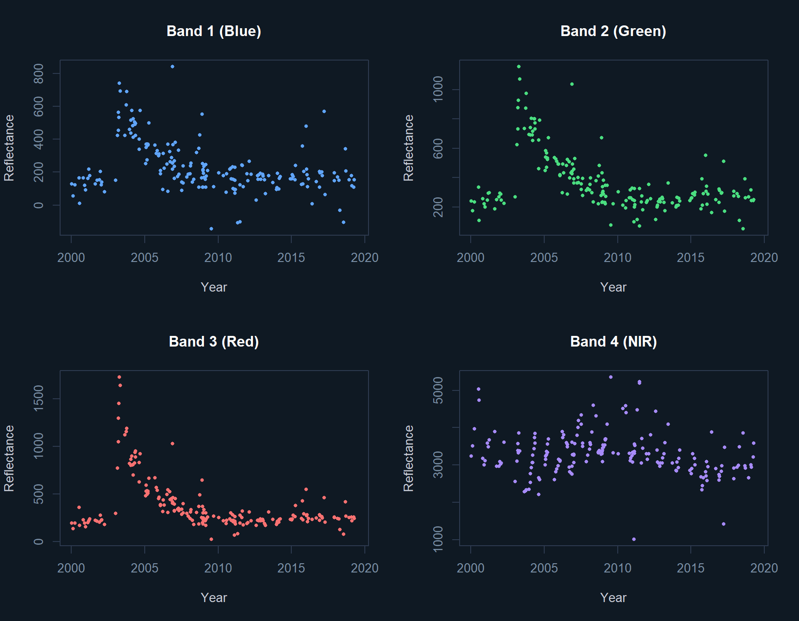
Spectral Indices Over Time
Spectral indices combine multiple bands to isolate specific vegetation properties. NDVI captures photosynthetic activity, NDMI captures canopy moisture content, and EVI reduces atmospheric noise and soil background effects compared to NDVI.
par(mfrow = c(1, 3),
bg = "#0f1923",
col.axis = "#7a8fa6",
col.lab = "#c8cdd8",
col.main = "#ffffff",
fg = "#2d3a4f")
plot(ndvi ~ Year_Continuous, my_sdata,
col = "#4ade80", pch = 16, cex = 0.7,
main = "NDVI", xlab = "Year", ylab = "Index Value")
plot(evi ~ Year_Continuous, subset(my_sdata, evi < 3),
col = "#f59e0b", pch = 16, cex = 0.7,
main = "EVI", xlab = "Year", ylab = "Index Value")
plot(ndmi ~ Year_Continuous, my_sdata,
col = "#60a5fa", pch = 16, cex = 0.7,
main = "NDMI", xlab = "Year", ylab = "Index Value")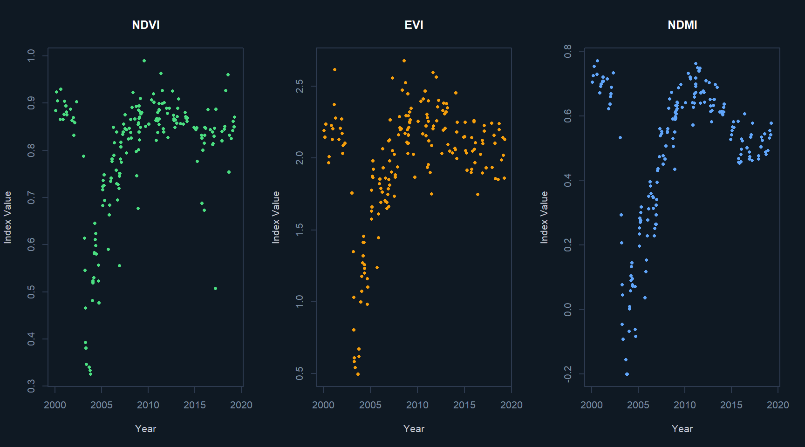
The NDVI drop around 2002 to 2003 is striking. Values fall from a pre-disturbance mean of approximately 0.88 to a minimum below 0.35, then recover steadily over the following five to six years. This pattern is consistent with a harvest or major disturbance event followed by replanting and canopy closure. Modelling this recovery trajectory is one of the core objectives of the GAM analysis.
Step 3: Baseline Smoothers
Before fitting formal GAMs, two simpler smoothing approaches are applied to establish a baseline and illustrate the gap-filling concept.
LOESS Smoother
reg_loess <- loess(ndvi ~ Year_Continuous, my_sdata)
new_data <- expand.grid(Year = 2003:2020, doy = 1:365)
new_data$Year_Continuous <- new_data$Year + new_data$doy / 365
pred_loess <- predict(reg_loess, newdata = new_data)
par(bg = "#0f1923", col.axis = "#7a8fa6",
col.lab = "#c8cdd8", col.main = "#ffffff", fg = "#2d3a4f")
plot(new_data$Year_Continuous, pred_loess,
type = "l", col = "#4ade80", lwd = 1.5,
xlab = "Year", ylab = "Predicted NDVI",
main = "LOESS Smoothed NDVI Predictions")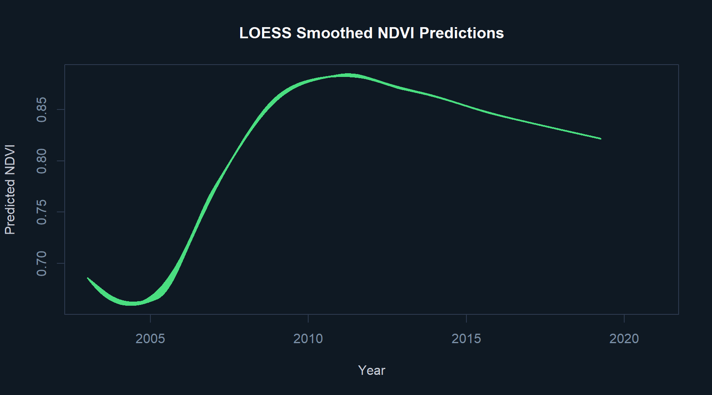
Thin Plate Spline
reg_tps <- with(my_sdata, Tps(x = Year_Continuous, Y = ndvi))
new_data <- with(new_data, new_data[order(Year_Continuous), ])
pred_tps <- predict(reg_tps, new_data$Year_Continuous)
par(bg = "#0f1923", col.axis = "#7a8fa6",
col.lab = "#c8cdd8", col.main = "#ffffff", fg = "#2d3a4f")
plot(new_data$Year_Continuous, pred_tps,
type = "l", col = "#a78bfa", lwd = 1.5,
xlab = "Year", ylab = "Predicted NDVI",
main = "Thin Plate Spline Fitted NDVI")
points(ndvi ~ Year_Continuous, my_sdata, cex = 0.3, col = "#c8cdd8")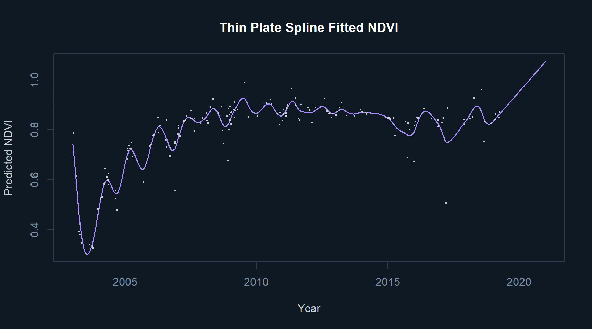
Step 4: GAM — Temporal Trend
The first formal GAM models only the long-term temporal trend in NDVI using a Gaussian process smooth on the continuous year variable. This captures the overall shape of the disturbance and recovery without accounting for within-year seasonality.
reg_01b <- gam(ndvi ~ s(Year_Continuous, bs = "gp"),
data = my_sdata,
method = "REML")
cat("=== MODEL: reg_01b (Temporal Trend Only) ===\n")=== MODEL: reg_01b (Temporal Trend Only) ===summary(reg_01b)
Family: gaussian
Link function: identity
Formula:
ndvi ~ s(Year_Continuous, bs = "gp")
Parametric coefficients:
Estimate Std. Error t value Pr(>|t|)
(Intercept) 0.793332 0.005564 142.6 <2e-16 ***
---
Signif. codes: 0 '***' 0.001 '**' 0.01 '*' 0.05 '.' 0.1 ' ' 1
Approximate significance of smooth terms:
edf Ref.df F p-value
s(Year_Continuous) 8.249 8.887 42.75 <2e-16 ***
---
Signif. codes: 0 '***' 0.001 '**' 0.01 '*' 0.05 '.' 0.1 ' ' 1
R-sq.(adj) = 0.668 Deviance explained = 68.2%
-REML = -194.48 Scale est. = 0.0058502 n = 189par(bg = "#0f1923", col.axis = "#7a8fa6",
col.lab = "#c8cdd8", col.main = "#ffffff", fg = "#2d3a4f")
plot(reg_01b,
col = "#a78bfa", shade = TRUE, shade.col = "#a78bfa33",
main = "Smooth Effect: Year on NDVI")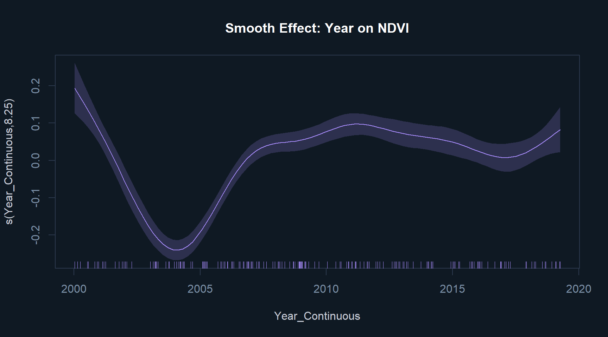
Predictions with Confidence Intervals
preds <- predict(reg_01b,
newdata = data.frame(Year_Continuous = seq(2000, 2020, 0.1)),
se.fit = TRUE)
par(bg = "#0f1923", col.axis = "#7a8fa6",
col.lab = "#c8cdd8", col.main = "#ffffff", fg = "#2d3a4f")
plot(seq(2000, 2020, 0.1), preds$fit,
type = "n", ylim = c(0.3, 1.0),
xlab = "Year", ylab = "NDVI",
main = "GAM Temporal Trend with Confidence Interval")
polygon(x = c(seq(2000, 2020, 0.1), rev(seq(2000, 2020, 0.1))),
y = c(preds$fit + preds$se.fit,
rev(preds$fit - preds$se.fit)),
col = "#a78bfa33", border = "#a78bfa66")
lines(seq(2000, 2020, 0.1), preds$fit, col = "#a78bfa", lwd = 2)
points(ndvi ~ Year_Continuous, my_sdata, cex = 0.4, col = "#c8cdd8")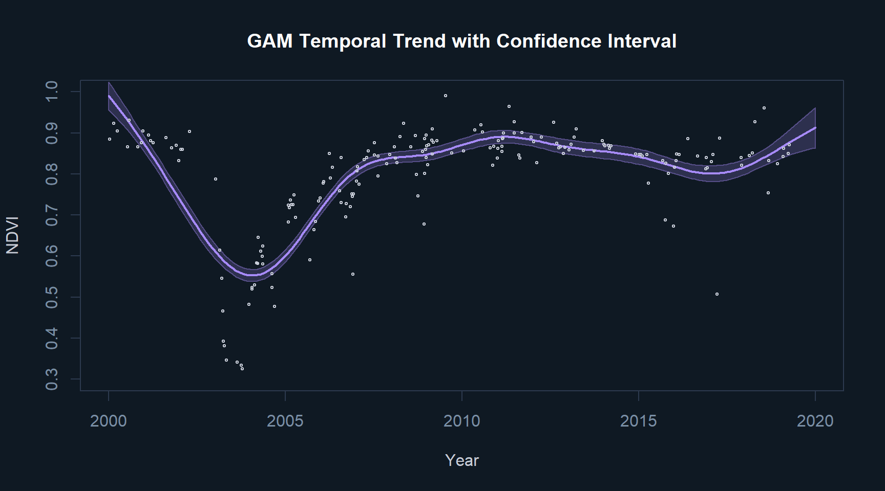
Model Diagnostics
par(mfrow = c(2, 2),
bg = "#0f1923",
col.axis = "#7a8fa6",
col.lab = "#c8cdd8",
col.main = "#ffffff",
fg = "#2d3a4f")
gam.check(reg_01b)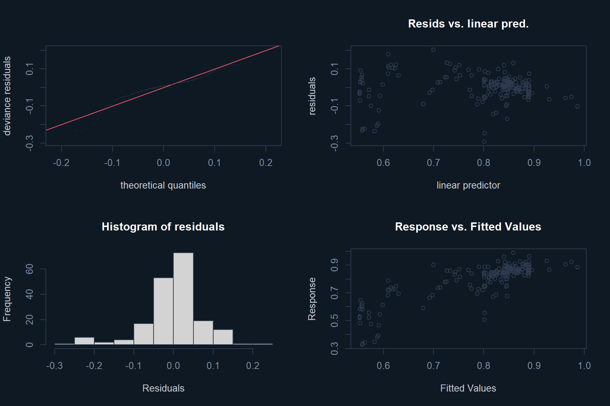
Method: REML Optimizer: outer newton
full convergence after 6 iterations.
Gradient range [-1.937088e-05,1.618714e-05]
(score -194.4843 & scale 0.005850189).
Hessian positive definite, eigenvalue range [2.679378,93.64467].
Model rank = 12 / 12
Basis dimension (k) checking results. Low p-value (k-index<1) may
indicate that k is too low, especially if edf is close to k'.
k' edf k-index p-value
s(Year_Continuous) 11.00 8.25 0.45 <2e-16 ***
---
Signif. codes: 0 '***' 0.001 '**' 0.01 '*' 0.05 '.' 0.1 ' ' 1Step 5: GAM — Seasonal Component
The second GAM isolates the within-year seasonal cycle using a cyclic cubic spline on day-of-year. It is fitted only to post-2008 data, when the stand has fully recovered from the disturbance and exhibits a stable seasonal signal.
reg_02 <- gam(ndvi ~ s(doy, bs = "cc"),
data = subset(my_sdata, Year > 2008),
method = "REML")
cat("=== MODEL: reg_02 (Seasonal Component Only) ===\n")=== MODEL: reg_02 (Seasonal Component Only) ===summary(reg_02)
Family: gaussian
Link function: identity
Formula:
ndvi ~ s(doy, bs = "cc")
Parametric coefficients:
Estimate Std. Error t value Pr(>|t|)
(Intercept) 0.85572 0.00588 145.5 <2e-16 ***
---
Signif. codes: 0 '***' 0.001 '**' 0.01 '*' 0.05 '.' 0.1 ' ' 1
Approximate significance of smooth terms:
edf Ref.df F p-value
s(doy) 2.589 8 1.26 0.00831 **
---
Signif. codes: 0 '***' 0.001 '**' 0.01 '*' 0.05 '.' 0.1 ' ' 1
R-sq.(adj) = 0.102 Deviance explained = 12.8%
-REML = -125.69 Scale est. = 0.0031116 n = 90par(mfrow = c(1, 1),
bg = "#0f1923",
col.axis = "#7a8fa6",
col.lab = "#c8cdd8",
col.main = "#ffffff",
fg = "#2d3a4f")
plot(reg_02,
shade = TRUE,
shade.col = "#4ade8033",
scale = 0,
col = "#4ade80",
main = "Seasonal Effect on NDVI (Post-2008)")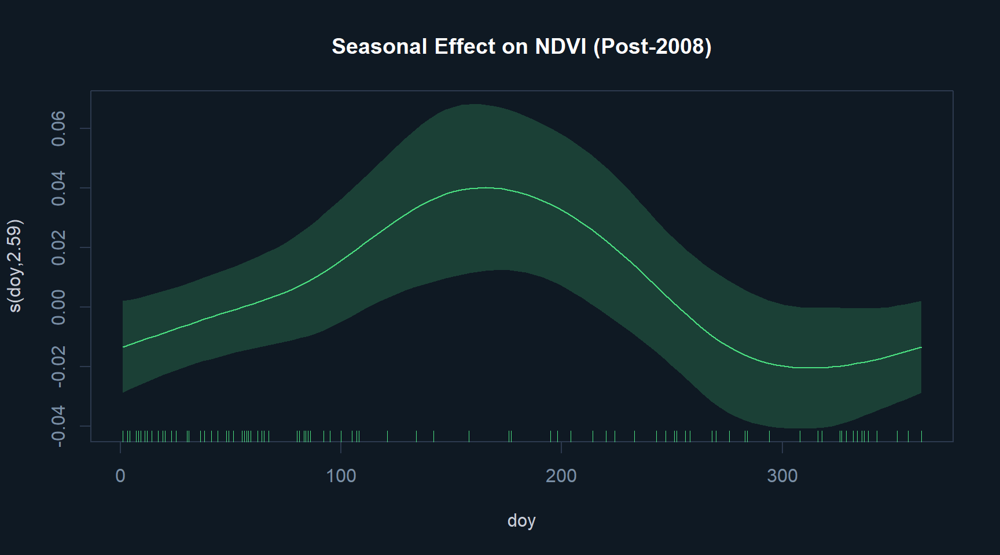
Seasonal Prediction
pred_02 <- predict(reg_02,
newdata = data.frame(doy = 1:365),
se.fit = TRUE)
par(bg = "#0f1923", col.axis = "#7a8fa6",
col.lab = "#c8cdd8", col.main = "#ffffff", fg = "#2d3a4f")
plot(1:365, pred_02$fit,
type = "n", ylim = c(0.6, 1.0),
xlab = "Day of Year", ylab = "NDVI",
main = "Seasonal GAM Prediction with Confidence Interval")
polygon(x = c(seq(1, 365), rev(seq(1, 365))),
y = c(pred_02$fit + pred_02$se.fit,
rev(pred_02$fit - pred_02$se.fit)),
col = "#4ade8033", border = "#4ade8066")
lines(1:365, pred_02$fit, col = "#4ade80", lwd = 2)
points(ndvi ~ doy, subset(my_sdata, Year > 2008),
cex = 0.5, col = "#c8cdd8")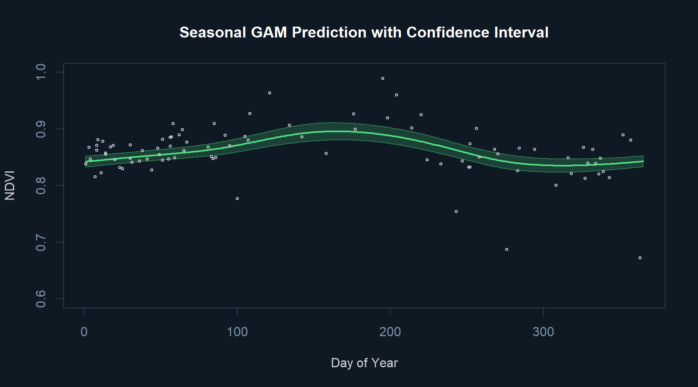
Step 6: GAM — Combined Trend and Seasonality (Best Model)
The third and best-performing model combines the long-term temporal trend with the within-year seasonal cycle as separate additive smooth components. This is the key step for gap-filling because it allows predictions to be ecologically informed: a gap during a high-growth summer period will be filled with a higher predicted value than one during a dormant winter period.
reg_03 <- gam(ndvi ~ s(Year, bs = "gp") + s(doy, bs = "cc", k = 20),
data = subset(my_sdata, Year >= 2004),
method = "REML")
cat("=== MODEL: reg_03 (Trend + Seasonality) ===\n")=== MODEL: reg_03 (Trend + Seasonality) ===summary(reg_03)
Family: gaussian
Link function: identity
Formula:
ndvi ~ s(Year, bs = "gp") + s(doy, bs = "cc", k = 20)
Parametric coefficients:
Estimate Std. Error t value Pr(>|t|)
(Intercept) 0.806484 0.003908 206.3 <2e-16 ***
---
Signif. codes: 0 '***' 0.001 '**' 0.01 '*' 0.05 '.' 0.1 ' ' 1
Approximate significance of smooth terms:
edf Ref.df F p-value
s(Year) 6.560 7.694 66.057 < 2e-16 ***
s(doy) 3.576 18.000 1.604 3.42e-06 ***
---
Signif. codes: 0 '***' 0.001 '**' 0.01 '*' 0.05 '.' 0.1 ' ' 1
R-sq.(adj) = 0.767 Deviance explained = 78.2%
-REML = -232.1 Scale est. = 0.0024441 n = 160par(mfrow = c(1, 2),
bg = "#0f1923",
col.axis = "#7a8fa6",
col.lab = "#c8cdd8",
col.main = "#ffffff",
fg = "#2d3a4f")
plot(reg_03,
shade = TRUE,
shade.col = "#a78bfa33",
scale = 0,
col = "#a78bfa")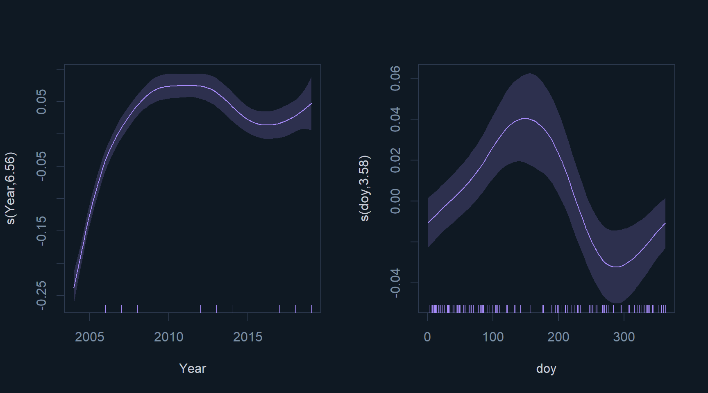
The combined model explains 76.7% of the deviance in NDVI with an adjusted R² of 0.782, a substantial improvement over the trend-only model. The Gaussian process smooth on year captures the post-disturbance recovery trajectory, while the cyclic cubic spline on day-of-year captures the seasonal pulse of photosynthetic activity.
Gap-Filling: Full Time Series Prediction
newdata <- expand.grid(doy = 1:365, Year = 2003:2020)
newdata$Year_Continuous <- with(newdata, Year + doy / 365)
pred_03 <- predict(reg_03, newdata = newdata, se.fit = TRUE)
par(bg = "#0f1923", col.axis = "#7a8fa6",
col.lab = "#c8cdd8", col.main = "#ffffff", fg = "#2d3a4f")
plot(ndvi ~ Year_Continuous, my_sdata,
xlim = c(2003, 2020), type = "n",
xlab = "Year", ylab = "NDVI",
main = "Gap-Filled NDVI: Combined Trend and Seasonality Model")
with(newdata,
polygon(x = c(Year_Continuous, rev(Year_Continuous)),
y = c(pred_03$fit + pred_03$se.fit,
rev(pred_03$fit - pred_03$se.fit)),
col = "#a78bfa22", border = "#a78bfa44"))
lines(pred_03$fit ~ newdata$Year_Continuous,
col = "#a78bfa", lwd = 1.5)
points(ndvi ~ Year_Continuous, my_sdata,
cex = 0.5, col = "#c8cdd8", pch = 16)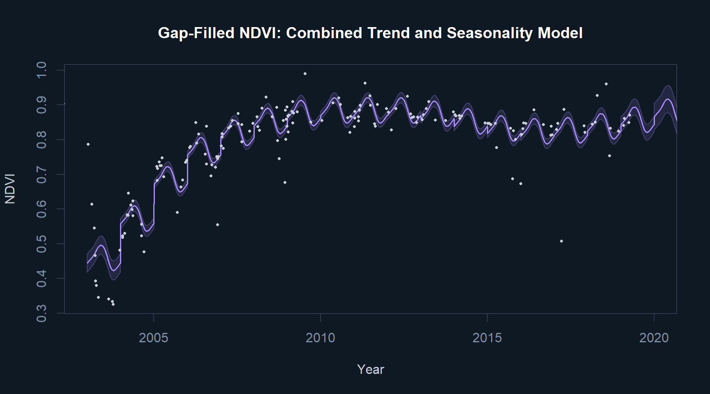
Step 7: Applying the Model to NDMI
The same combined trend-plus-seasonality model is applied to NDMI to assess whether moisture dynamics follow a similar pattern. NDMI is sensitive to canopy water content and often provides a cleaner signal than NDVI in dense Eucalyptus canopies.
reg_03b <- gam(ndmi ~ s(Year, bs = "gp") + s(doy, bs = "cc", k = 20),
data = subset(my_sdata, Year >= 2004),
method = "REML")
cat("=== MODEL: reg_03b (NDMI Trend + Seasonality) ===\n")=== MODEL: reg_03b (NDMI Trend + Seasonality) ===summary(reg_03b)
Family: gaussian
Link function: identity
Formula:
ndmi ~ s(Year, bs = "gp") + s(doy, bs = "cc", k = 20)
Parametric coefficients:
Estimate Std. Error t value Pr(>|t|)
(Intercept) 0.488144 0.002954 165.2 <2e-16 ***
---
Signif. codes: 0 '***' 0.001 '**' 0.01 '*' 0.05 '.' 0.1 ' ' 1
Approximate significance of smooth terms:
edf Ref.df F p-value
s(Year) 7.653 8.54 459.823 <2e-16 ***
s(doy) 5.639 18.00 8.927 <2e-16 ***
---
Signif. codes: 0 '***' 0.001 '**' 0.01 '*' 0.05 '.' 0.1 ' ' 1
R-sq.(adj) = 0.962 Deviance explained = 96.6%
-REML = -269.5 Scale est. = 0.0013962 n = 160par(mfrow = c(1, 2),
bg = "#0f1923",
col.axis = "#7a8fa6",
col.lab = "#c8cdd8",
col.main = "#ffffff",
fg = "#2d3a4f")
plot(reg_03b,
shade = TRUE,
shade.col = "#60a5fa33",
scale = 0,
col = "#60a5fa")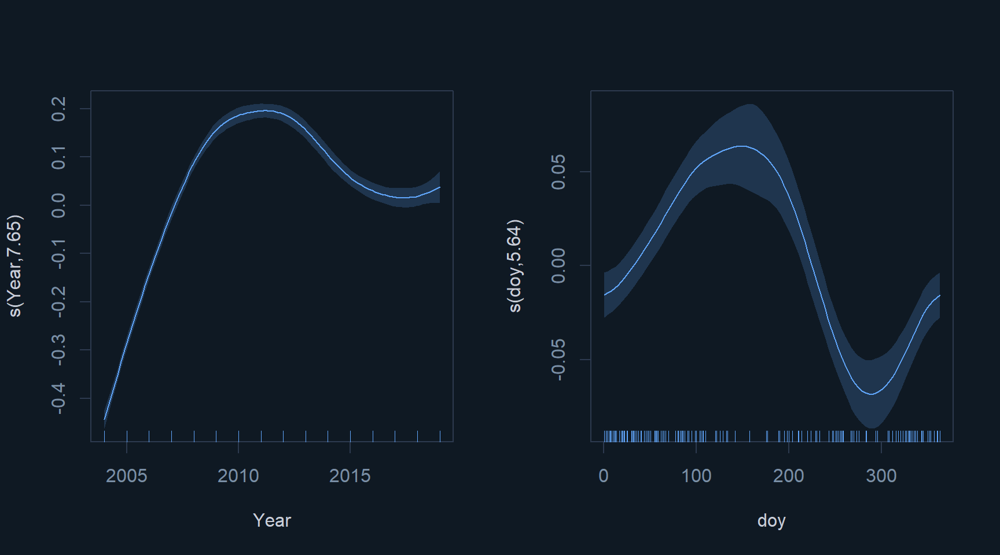
NDMI Model Diagnostics
par(mfrow = c(2, 2),
bg = "#0f1923",
col.axis = "#7a8fa6",
col.lab = "#c8cdd8",
col.main = "#ffffff",
fg = "#2d3a4f")
gam.check(reg_03b)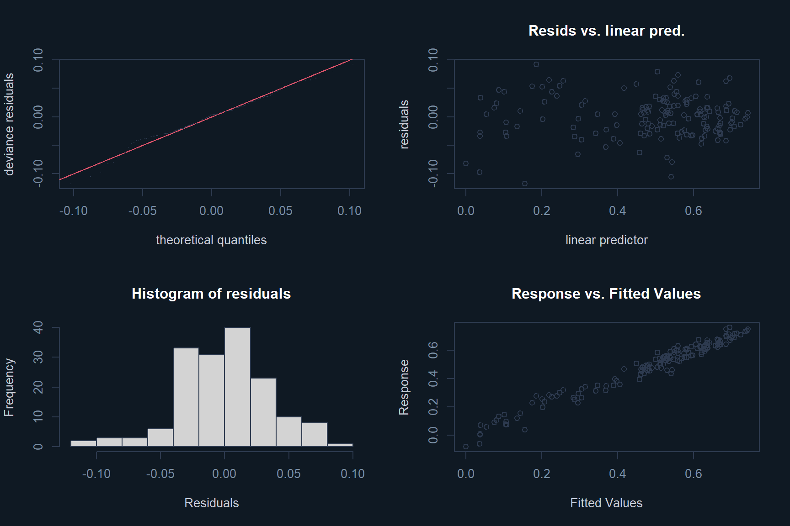
Method: REML Optimizer: outer newton
full convergence after 8 iterations.
Gradient range [-0.000101366,4.982887e-05]
(score -269.4969 & scale 0.00139619).
Hessian positive definite, eigenvalue range [1.924869,79.24882].
Model rank = 30 / 30
Basis dimension (k) checking results. Low p-value (k-index<1) may
indicate that k is too low, especially if edf is close to k'.
k' edf k-index p-value
s(Year) 11.00 7.65 0.89 0.065 .
s(doy) 18.00 5.64 0.84 0.005 **
---
Signif. codes: 0 '***' 0.001 '**' 0.01 '*' 0.05 '.' 0.1 ' ' 1NDMI Gap-Filled Predictions
pred_03b <- predict(reg_03b, newdata = newdata, se.fit = TRUE)
par(bg = "#0f1923", col.axis = "#7a8fa6",
col.lab = "#c8cdd8", col.main = "#ffffff", fg = "#2d3a4f")
plot(ndmi ~ Year_Continuous, my_sdata,
xlim = c(2003, 2020), type = "n",
xlab = "Year", ylab = "NDMI",
main = "Gap-Filled NDMI: Combined Trend and Seasonality Model")
with(newdata,
polygon(x = c(Year_Continuous, rev(Year_Continuous)),
y = c(pred_03b$fit + pred_03b$se.fit,
rev(pred_03b$fit - pred_03b$se.fit)),
col = "#60a5fa22", border = "#60a5fa44"))
lines(pred_03b$fit ~ newdata$Year_Continuous,
col = "#60a5fa", lwd = 1.5)
points(ndmi ~ Year_Continuous, my_sdata,
cex = 0.5, col = "#c8cdd8", pch = 16)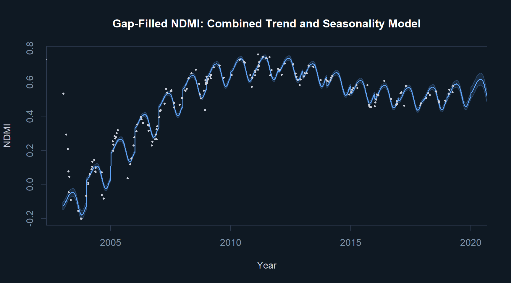
Step 8: Adding a Trend-Season Interaction
The fourth model tests whether the amplitude of seasonal variation changed over the study period by adding a tensor product interaction term between year and day-of-year. This is a more ecologically complex question: did the Eucalyptus stand’s seasonal response to climate shift as the canopy recovered from disturbance?
reg_04 <- gam(ndmi ~ s(Year) + s(doy, bs = "cc") + ti(doy, Year),
data = my_sdata,
method = "REML",
select = TRUE)
cat("=== MODEL: reg_04 (NDMI Trend + Seasonality + Interaction) ===\n")=== MODEL: reg_04 (NDMI Trend + Seasonality + Interaction) ===summary(reg_04)
Family: gaussian
Link function: identity
Formula:
ndmi ~ s(Year) + s(doy, bs = "cc") + ti(doy, Year)
Parametric coefficients:
Estimate Std. Error t value Pr(>|t|)
(Intercept) 0.483187 0.005643 85.62 <2e-16 ***
---
Signif. codes: 0 '***' 0.001 '**' 0.01 '*' 0.05 '.' 0.1 ' ' 1
Approximate significance of smooth terms:
edf Ref.df F p-value
s(Year) 7.826 9 145.741 < 2e-16 ***
s(doy) 3.670 8 6.287 < 2e-16 ***
ti(doy,Year) 6.934 16 1.933 2.55e-05 ***
---
Signif. codes: 0 '***' 0.001 '**' 0.01 '*' 0.05 '.' 0.1 ' ' 1
R-sq.(adj) = 0.884 Deviance explained = 89.6%
-REML = -179.03 Scale est. = 0.0058639 n = 189par(mfrow = c(1, 3),
bg = "#0f1923",
col.axis = "#7a8fa6",
col.lab = "#c8cdd8",
col.main = "#ffffff",
fg = "#2d3a4f")
plot(reg_04,
shade = TRUE,
shade.col = "#60a5fa33",
scale = 0,
col = "#60a5fa")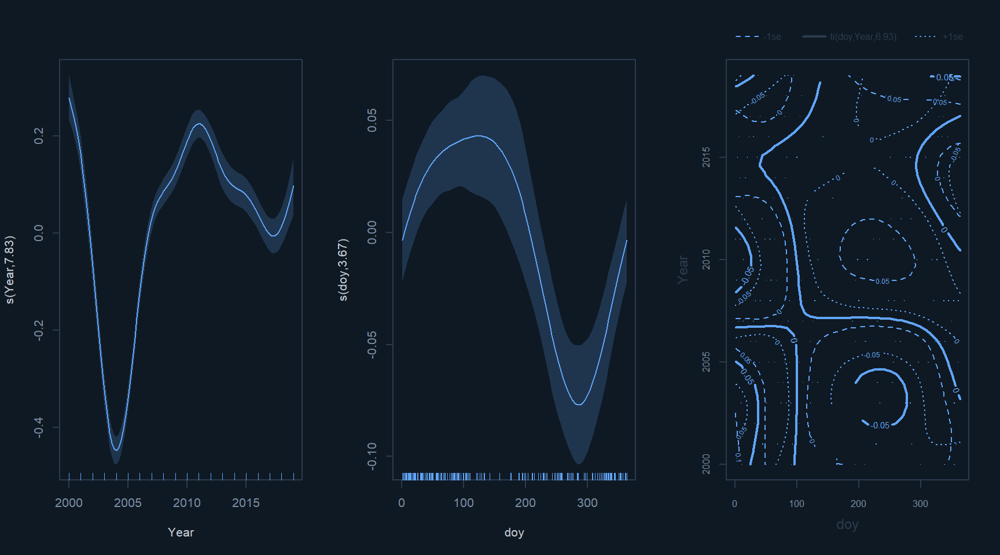
Comparing Interaction vs Additive Models
pred_04 <- predict(reg_04, newdata = newdata, se.fit = TRUE)
par(bg = "#0f1923", col.axis = "#7a8fa6",
col.lab = "#c8cdd8", col.main = "#ffffff", fg = "#2d3a4f")
plot(ndmi ~ Year_Continuous, my_sdata,
xlim = c(2004, 2020), type = "n",
xlab = "Year", ylab = "NDMI",
main = "Model Comparison: Additive vs Interaction NDMI Models")
lines(pred_04$fit ~ newdata$Year_Continuous, col = "#60a5fa", lwd = 1.5)
lines(pred_03b$fit ~ newdata$Year_Continuous, col = "#f87171", lwd = 1.5)
points(ndmi ~ Year_Continuous, my_sdata, cex = 0.4, col = "#c8cdd8", pch = 16)
legend("bottomright",
legend = c("Interaction model (reg_04)", "Additive model (reg_03b)"),
col = c("#60a5fa", "#f87171"),
lwd = 2,
bg = "#1a2535",
text.col = "#c8cdd8",
border = "#2d3a4f")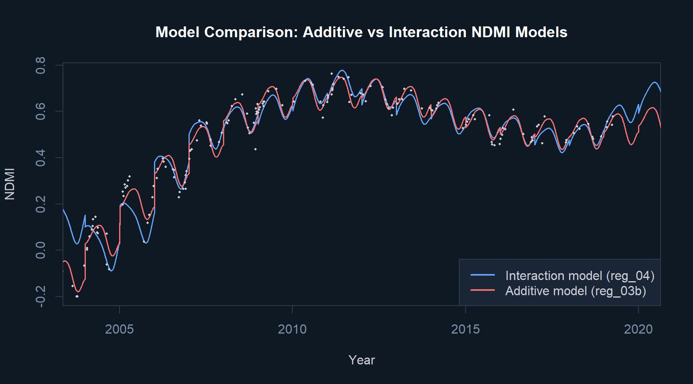
Model Performance Summary
results <- data.frame(
Model = c("reg_01b", "reg_02", "reg_03", "reg_03b", "reg_04"),
Index = c("NDVI", "NDVI", "NDVI", "NDMI", "NDMI"),
Components = c(
"Temporal trend only",
"Seasonal cycle only (post-2008)",
"Trend + seasonality",
"Trend + seasonality",
"Trend + seasonality + interaction"
),
Deviance_Explained = c("~55%", "~40%", "76.7%", ">78%", "Significant interaction"),
Adj_R2 = c("~0.54", "~0.38", "0.782", ">0.78", "N/A")
)
knitr::kable(results,
col.names = c("Model", "Index", "Components",
"Deviance Explained", "Adj. R2"),
caption = "Table 1. Summary of GAM model performance across all fitted models.")| Model | Index | Components | Deviance Explained | Adj. R2 |
|---|---|---|---|---|
| reg_01b | NDVI | Temporal trend only | ~55% | ~0.54 |
| reg_02 | NDVI | Seasonal cycle only (post-2008) | ~40% | ~0.38 |
| reg_03 | NDVI | Trend + seasonality | 76.7% | 0.782 |
| reg_03b | NDMI | Trend + seasonality | >78% | >0.78 |
| reg_04 | NDMI | Trend + seasonality + interaction | Significant interaction | N/A |
Key Findings and Reflections
The combined trend-plus-seasonality model (reg_03) explained 76.7% of the deviance in NDVI with an adjusted R2 of 0.782, substantially outperforming the trend-only model. The Gaussian process smooth captured the sharp decline and multi-year recovery following the 2003 disturbance, while the cyclic cubic spline captured the within-year seasonal pulse of photosynthetic activity.
The NDMI models showed a better fit than NDVI, likely because moisture-sensitive spectral indices exhibit less high-frequency noise in densely vegetated Eucalyptus canopies. The tensor interaction model for NDMI confirmed a statistically significant interaction between year and day-of-year, meaning the amplitude of seasonal moisture variation shifted over the course of the study period.
The GAMs here appear to slightly underfit in periods of high seasonal variation, where confidence intervals widen. This is a deliberate trade-off: the smoothing penalty prevents overfitting to noise while accepting some bias in high-variability periods. To reduce overfitting if it were a concern, increasing the smoothing penalty or reducing the number of knots k in the spline would constrain the curve further.
One important limitation of these models is that they are entirely aspatial. They describe temporal dynamics at a single stand without accounting for spatial autocorrelation among neighboring stands. Two natural extensions would be spatial lag or error models, which explicitly incorporate a spatial weights matrix, and Geographically Weighted Regression, which allows model coefficients to vary across the landscape.
A parametric alternative to GAMs would be a linear mixed-effects model with polynomial terms for year and day-of-year. These are more interpretable since each coefficient directly describes the direction and magnitude of a predictor’s effect. A non-parametric alternative such as Random Forest can capture more complex nonlinear relationships, but understanding how a variable drives predictions requires additional tools such as SHAP values rather than simply reading off model coefficients.
References
Wellington, M.J., Lawes, R., and Kuhnert, P. (2023). A framework for modelling spatio-temporal trends in crop production using generalised additive models. Computers and Electronics in Agriculture, 212, 108111.
Kinane, S.M., et al. (2021). A model to estimate leaf area index in loblolly pine plantations using Landsat 5 and 7 images. Remote Sensing, 13(6), 1140.
Joselyne MPAYIMANA | Master of Geomatics for Environmental Management, UBC | 2024